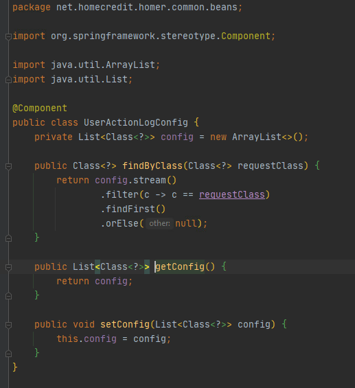

Цель:
Необходимо логировать реквесты, респонзы и хедеры некоторых методов soap-сервисов
План:
- Написать свою аннотацию, и вещать на те методы который мы хотим логировать
- Написать свой BeanPostProcessor который будет при создании бинов будет чекать есть ли наша аннотация, и если да, то будет добавлять эти методы в так называваемый LogConfig
- Написать LogConfig который будет в себе содержать методы которые мы будем логировать
- Написать свой interceptor (перехватчик запросов) и добавить его в контекст сервлета, который на уровне сервлета будет перехватывать запросы, и смотреть есть ли они в нашем LogConfig, если да, то логировать их.
Саздаём новую аннотацию и указывает то что мы ее будем вешать на методы (ElementType.METHOD) и то что она будет работать в RUNTIME
Вешаем эту аннотацию на метод который нам нужно логировать.
Пишем наш BeanPostProcessor который будет расширять основной BeanPostProcessor и добавлять в него свою логику, а именно при подготовке всех бинов мы будем их просматривать на наличие нужных нам аннотаций (@Endpoint), и находя их мы будем у них просмотривать методы на предмет наличия нашей аннотации @UserActionLog, и при их нахождении добавлять в LogConfig.
Пишем LogConfig который по сути будет из себя представлять список методов которые нужно логировать.
Теперь когда у нас есть список методов которые нужно логировать, мы можем написать перехватчик запросов на уровне сервелета, который при перехвате запроса будет проверять есть ои он в списке LogConfig, если да то логировать его.
Не забываем добавить наши созданные бины (LogConfig и BeanPostProcessor) в контекст спринга
А также нужно добавить наш interceptor в конфиг нашего сервлета.